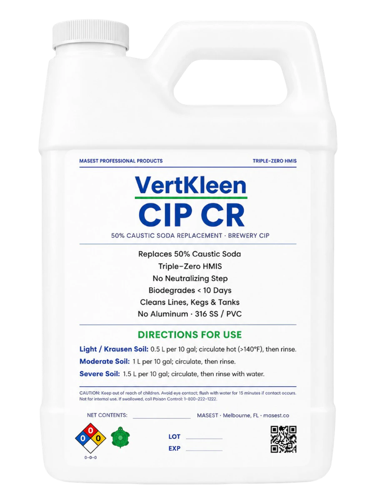

FB labelVertKleen CIP CR
50% caustic soda replacement · brewery CIP
Label dilution / concentration
- Light / krausen soil: 0.5 L per 10 gal; circulate hot (>140°F), then rinse
- Moderate soil: 1 L per 10 gal; circulate, then rinse
- Severe soil: 1.5 L per 10 gal; circulate, then rinse with water